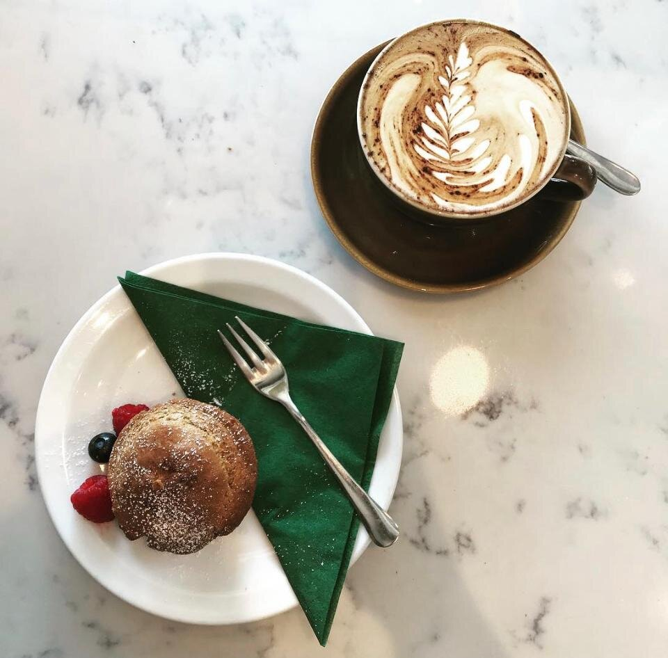
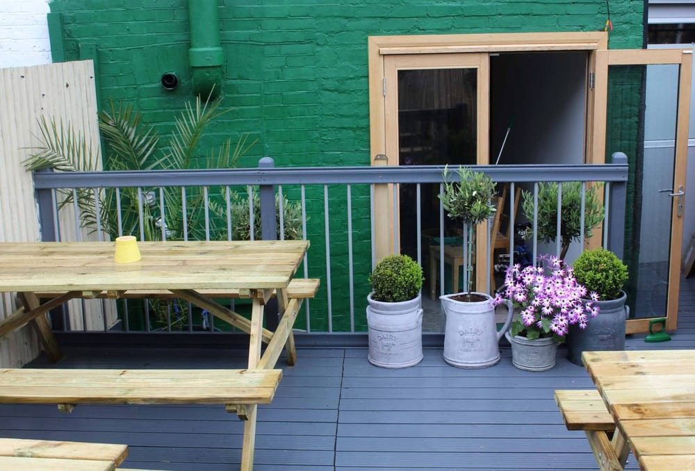
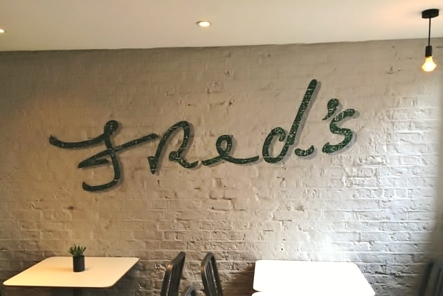
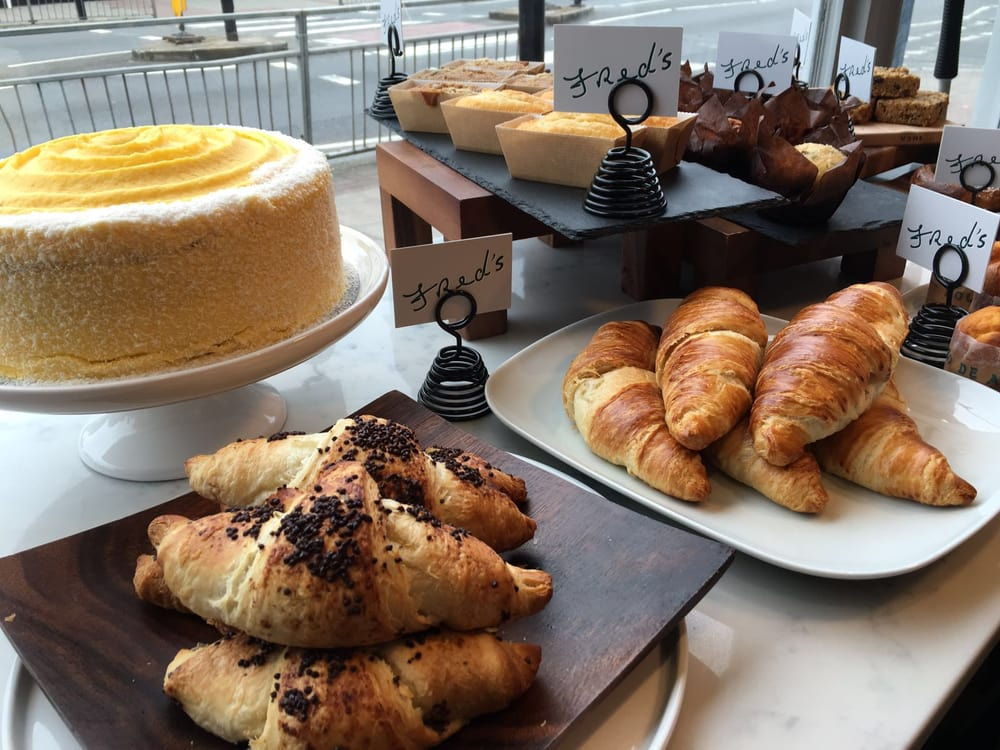

Cafe
A warm & welcoming space on Brockley Road, with Allpress coffee, matcha, and a delicious homemade menu.
Learn more ›Providing a warm welcome through our Crofton Park cafe — Allpress coffee, cakes, a suntrap garden patio, and neighbourhood gatherings opposite the station.


A warm & welcoming space on Brockley Road, with Allpress coffee, matcha, and a delicious homemade menu.
Learn more ›
Our suntrap patio is a real asset — brunch, catch-ups, and buggy-friendly mornings in SE4.
Learn more ›
With neighbours at the heart of everything we do — events, workshops, and gatherings in Crofton Park.
Learn more ›
Fred's sits opposite Crofton Park station. Neighbours come for Allpress espresso, Good & Proper matcha, Swedish flatbreads and homemade cakes — then stay for free Wi‑Fi and the garden suntrap out back.
Learn more8–4
Open daily — Mon–Fri from 8:00, weekends from 8:30
4.3
Yelp rating from neighbours who love the coffee, cakes and welcome
Garden
Suntrap patio out back — picnic tables, buggy-friendly, pure SE4
SE4
358 Brockley Road — right opposite Crofton Park station
Garden brunches, family mornings and tastings — community at the heart of Fred's.
Want to host a workshop, book club, or birthday brunch?
Message @fredslondon358 Brockley Road
London SE4 2BY
Opposite Crofton Park station — grab-and-go for the train, or a slow sit in the garden.
| Monday – Friday | 8:00 – 16:00 |
| Saturday – Sunday | 8:30 – 16:00 |
Follow along for today's bakes, garden weather, and what's on at Fred's.
Follow @fredslondon